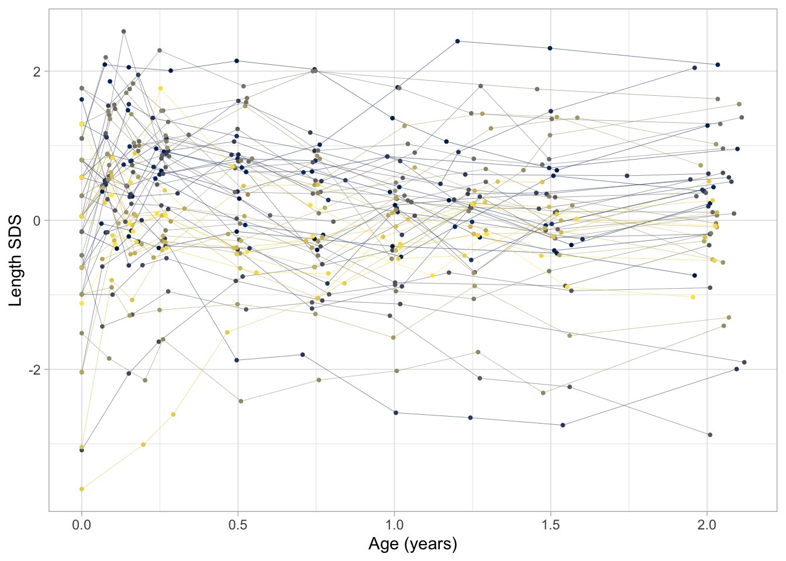

Overview of main functions
Stef van Buuren
2020-10-15
Source:vignettes/mainfunctions.Rmd
mainfunctions.RmdObjective
This vignette demonstrates three major functions in the brokenstick package: brokenstick(), predict() and plot(). We also need dplyr and ggplot2.
Plot trajectories
The smocc_200 data in the brokenstick package contain the heights of 200 Dutch children measured on 10 visits at ages 0-2 years.
## # A tibble: 3 x 7
## id age sex ga bw hgt hgt.z
## <dbl> <dbl> <chr> <dbl> <dbl> <dbl> <dbl>
## 1 10001 0 female 40 3960 52 0.575
## 2 10001 0.0821 female 40 3960 55.6 0.888
## 3 10001 0.159 female 40 3960 58.2 0.797
Figure 1 dispays the data from the first 500 rows as a set of growth curves of Dutch children. Curves are steeper during the first few months, so child growth is faster for young infants. Note also there are more cross-overs during the first half year, whereas fewer occur later. This means that the relative positions have been settled by the age of 2 years, or - put differently - that the correlation between time points at those ages is high.
ggplot(data[1:500, ], aes(x = age, y = hgt.z, group = id, color = as.factor(id))) + geom_line(size = 0.1) + geom_point(size = 0.7) + scale_colour_viridis_d(option = "cividis") + xlab("Age (years)") + ylab("Length SDS") + theme_light() + theme(legend.position = "none")

Figure 2 dispays the same data, but with the vertical axis changed to Standard Deviation Scores (SDS), or \(Z\)-score. The \(Z\)-score is the height corrected for age relative to the Dutch height reference from the Fourth Dutch Growth Study. The \(Z\)-score transformation takes away the major time trend, so all curves are more or less flat. This allows us to see a more detailed assessment of individual growth.
The plots also show how the measurements are clustered around ten ages: birth, 1, 2, 3, 6, 9, 12, 15, 18 and 24 months. While the design was followed rigorously in the study, some variation in timing is inevitable because of weekends, holidays, sickness, and other events. The timing variation poses a problem because we cannot directly compare the measurement between different children (especially for figure 1). Also, we cannot easily construct the “broad” matrix with 10 time point per child.
Of course, we can divide the time axis into ten age groups, and treat all point within the same age group as being measured at the same point. This is probably a good strategy for nicely looking data - as we have here -, but this approach is problematic in data with irregular time intervals, of there are multiple measurement per age group, if the measurement schedules vary by child, or in data combined from studies that employed different designs.
The brokenstick package contains tools to approximate the observed data by a series of connecting straight lines. When these lines closely follow the data, we may replace each trajectory by its values at the breakpoints. The statistical analysis can then be done on the regularised trajectories, which is easier than working with the observed data.
Fit broken stick model with one line
We fit a trivial broken stick model with just one line anchored at the minimum and maximum age, and plot the trajectories of three selected children as follows:
fit <- brokenstick(hgt ~ age | id, data) ids <- c(10001, 10005, 10022) plot(fit, new_data = data, group = ids, what = "all", xlab = "Age (years)", ylab = "Length (cm)")

The following plot displays the same data, but in standardised units so as to increase the analytic resolution:
fit0 <- brokenstick(hgt.z ~ age | id, data) plot(fit0, new_data = data, group = ids, what = "all", xlab = "Age (years)", ylab = "Length (SDS)")

Note that both approximations are quite bad.
Fit broken stick model with two lines
The broken stick model describes a trajectory by a series of connected straight lines. We first calculate a model with two connected lines. The first line starts at birth and end at the age of exactly 1 years. The second line spans the period between 1 to 2 years. In addition, the lines must connect at the age of 1 year. We estimate and plot the model as follows:
fit2 <- brokenstick(hgt.z ~ age | id, data = data, knots = 0:3) plot(fit2, data, group = ids, xlim = c(0, 2.1), xlab = "Age (years)", ylab = "Length (SDS)")

The fit2 object holds the parameter estimates of the model:
fit2## Class: brokenstick (lmer)
## Knots: 0 1 2 3
## Means: 0.09 0.04 0.09 0.13
## Variance-covariance matrix:
## age_0 age_1 age_2 age_3
## age_0 0.83
## age_1 0.42 0.8
## age_2 0.44 0.76 0.83
## age_3 -0.49 -0.18 -0.06 0.51
## Residual variance: 0.1776797The console output lists the knots of the model, including the left and right boundary knots at 0 and 3. The row of means correspond to the fixed effect estimates of the linear mixed model. We may interpret these as the global means. Next, the output lists the variance-covariance matrix of the random effects. The model contains 4 random effects (3 visits + 1 end knot). Finally, the residual variance is the model error at the subject level. These three set of parameters are enough to reconstruct the broken stick model.
Extend to nine lines
The plot shows that the two-line model is still fairly crude. We refine the model in the first two years by adding a knot for each age at which a visit was scheduled. This model can be run as
knots <- round(c(0, 1, 2, 3, 6, 9, 12, 15, 18, 24)/12, 4) fit9 <- brokenstick(hgt.z ~ age | id, data = data, knots = knots, boundary = c(0, 3))
This optimization problem is more difficult, so it takes longer to run. In addition, it is common that the optimization routines issue a number of warnings related to the number of random effects relative to the number of observations. While these may appear a little discomforting, we have found that the warnings are generally somewhat at the conservative side, so the parameter estimates are probably still OK.

The nine-line broken stick model fits the observed data very well.
Obtain predicted values
The predict() function allows us to obtain various types of predictions from the broken stick model. The simplest call
## .pred
## 1 0.7083945
## 2 0.6492978
## 3 0.5940882
## 4 0.5251301
## 5 0.3457527
## 6 0.1664473## [1] TRUEproduces a tibble with the one column called .pred for each row in data. We can bind column .pred to data for further processing.
Sometimes, we also want the prediction at the knot values, for example, to create graphs that contain observed and modelled trajectories. We obtain predictions at the knots by the special x = "knots" argument, e.g.
## # A tibble: 6 x 9
## .source id age sex ga bw hgt hgt.z .pred
## <chr> <dbl> <dbl> <chr> <dbl> <dbl> <dbl> <dbl> <dbl>
## 1 added 10001 0 <NA> NA NA NA NA 0.708
## 2 added 10001 1 <NA> NA NA NA NA -0.0114
## 3 added 10001 2 <NA> NA NA NA NA 0.0792
## 4 added 10001 3 <NA> NA NA NA NA -0.285
## 5 added 10002 0 <NA> NA NA NA NA -0.220
## 6 added 10002 1 <NA> NA NA NA NA -0.398nrow(p2)
## [1] 800The output is more verbose and includes the grid of knots for each child (id, age). The column .source is equal to added as rows are added to the data.
Note there are also knots at ages 0.00 and 3.00 years. These are boundary knots, and added by the brokenstick() function. By default, the boundary knots span the age range in the data. The estimate for the knot at the maximum age has no useful interpretation, and should be ignored.
If we wish to obtain estimates at both the knots and the observed data use:
##
## added data
## 800 1942This return 1940 rows for the data and 800 rows for the knots.
Explained variance
The proportion of the variance of the outcome explained by the two-line model is
get_r2(fit2, data)
## [1] 0.8498623For the second model we get
get_r2(fit9, data)
## [1] 0.9747304so the nine-line broken stick model explains about 97 percent of the variance of the height SDS.
Subject level analysis
Suppose we are interest in knowing the effect of sex, gestational age and birth weight on the height SDS at the age of 2 years. This is an analysis at the subject level. Let us first extract the subject-level data with variables that vary over subjects only.
## # A tibble: 3 x 4
## # Groups: id [3]
## id sex ga bw
## <dbl> <chr> <dbl> <dbl>
## 1 10001 female 40 3960
## 2 10002 male 38 3210
## 3 10003 female 40 4170We also need the outcome variable. We take it from the broken stick estimates from the nine line solution and append it to the subject level data.
bs <- predict(fit9, data, x = "knots", shape = "wide") data <- bind_cols(subj, select(bs, -id)) head(data, 3)
## # A tibble: 3 x 15
## # Groups: id [3]
## id sex ga bw `0` `0.0833` `0.1667` `0.25` `0.5` `0.75` `1`
## <dbl> <chr> <dbl> <dbl> <dbl> <dbl> <dbl> <dbl> <dbl> <dbl> <dbl>
## 1 10001 fema… 40 3960 0.574 0.883 0.705 0.612 0.320 -0.206 0.0755
## 2 10002 male 38 3210 -0.181 -0.314 -0.250 -0.320 -0.233 -0.282 -0.329
## 3 10003 fema… 40 4170 1.17 2.07 1.95 2.08 2.05 1.77 1.31
## # … with 4 more variables: `1.25` <dbl>, `1.5` <dbl>, `2` <dbl>, `3` <dbl>The names of the columns in bs correspond to the knot values.
The effect of the subject’s sex, gestational age and birth weight on the height SDS at the age of 2 years (here denoted by the variable named 2) can be estimated as
##
## Call:
## lm(formula = `2` ~ sex + ga + I(bw/1000), data = data)
##
## Residuals:
## Min 1Q Median 3Q Max
## -2.79282 -0.49262 0.06051 0.64618 2.04097
##
## Coefficients:
## Estimate Std. Error t value Pr(>|t|)
## (Intercept) 1.88331 1.49550 1.259 0.209413
## sexmale -0.02350 0.13064 -0.180 0.857412
## ga -0.09259 0.04404 -2.102 0.036793 *
## I(bw/1000) 0.56081 0.14442 3.883 0.000141 ***
## ---
## Signif. codes: 0 '***' 0.001 '**' 0.01 '*' 0.05 '.' 0.1 ' ' 1
##
## Residual standard error: 0.894 on 196 degrees of freedom
## Multiple R-squared: 0.07484, Adjusted R-squared: 0.06068
## F-statistic: 5.285 on 3 and 196 DF, p-value: 0.001589Note that the analysis shows there is a substantial effect of birth weight. Of course, it might be that birth weight is directly related to height at the age of 2 years. Alternatively, the relation could be mediated by birth length. The following model adds birth length (the variable named 0) to the model:
##
## Call:
## lm(formula = `2` ~ sex + ga + I(bw/1000) + `0`, data = data)
##
## Residuals:
## Min 1Q Median 3Q Max
## -3.0752 -0.5182 0.0488 0.5976 1.9241
##
## Coefficients:
## Estimate Std. Error t value Pr(>|t|)
## (Intercept) 1.88163 1.47058 1.280 0.20224
## sexmale -0.02696 0.12847 -0.210 0.83397
## ga -0.06366 0.04455 -1.429 0.15460
## I(bw/1000) 0.23525 0.18422 1.277 0.20312
## `0` 0.22153 0.07985 2.774 0.00607 **
## ---
## Signif. codes: 0 '***' 0.001 '**' 0.01 '*' 0.05 '.' 0.1 ' ' 1
##
## Residual standard error: 0.8791 on 195 degrees of freedom
## Multiple R-squared: 0.11, Adjusted R-squared: 0.09171
## F-statistic: 6.023 on 4 and 195 DF, p-value: 0.0001367The effect of birth length on length at age 2 is very strong. There is no separate effect of birth weight anymore, so this analysis suggests that the relation between birth weight and length at age 2 can be explained by their mutual associations to birth length.
Conclusion
This vignette illustrated the use of the brokenstick(), plot() and predict() functions. Other vignettes highlight various other capabilities of the package.
-
Broken Stick Model for Irregular Longitudinal Data
- Irregular observation times
- Literature overview
- Definition of the model
- Interpretation of the model
- Estimation by
lmerandkrmethods - Software overview
-
brokenstick()for model fitting -
predict()for trajectory plotting - Conversion back and forth to the \(Z\)-score scale
- Predict growth curve of new subjects
- Assess the quality of the model
- Knot placement strategies
- Critical periods
- Time-to-time correlations
- Profile analysis
- Curve interpolation
- Multiple imputation
- Curve matching
- Discussion
-
Perfect model
- Properties of the perfect model
- Estimating time-to-time correlations
-
Help for old friends
- Properties of the perfect model
- Estimating time-to-time correlations